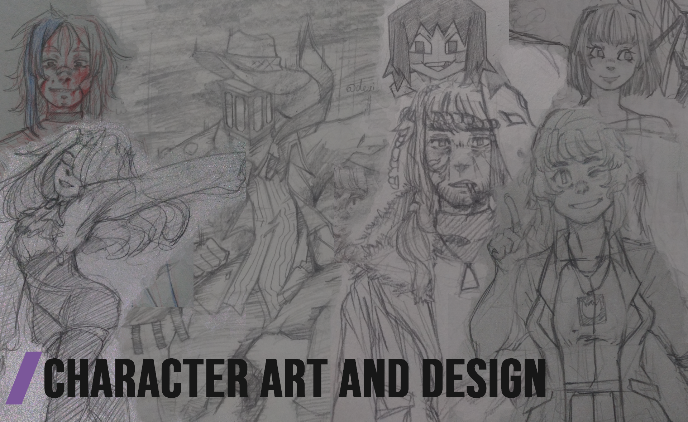

Character Art and Design
The Designs area brings with it all the content that can be taken as part of the process involved in creating and defining the design of a character, object or place so that it is balanced and visually attractive. Specifically on this page you will see illustrations with trial and error ranging from things as simple as a shape and color.
Different Perspectives of an Idea

Everytime I first conceive a character, I test out their design by practicing different perspectives and poses on them so I can get used to their physical attributes and individual details that make them unique.
Usually, female character tend to take me a little longer than what male characters do. This because I find them a little harder to adapt and give charm in my artstyles. However, that only means that I need an extra effort so I can get them permanently into the right path I want them to be.
Sometimes, Flowing can be of Great Help

In times of frustration I have made little gems just by letting myself go on with the flow of my hand.
Curves are easily percieved here, clumsy lines and doodles as well. Thinking more into their hair, and look of the clothes than facial expressions in example.
Delicate and beautiful, it is the most ephemeral of the kind of ideas I can execute.
Having Fun with Shapes

With a -weird- artstyle, I use not-round shapes to their limit so I can give a lot more personality to what its portrayed.
It is a little hard but fun activity!